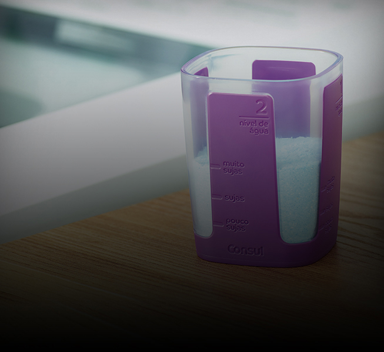
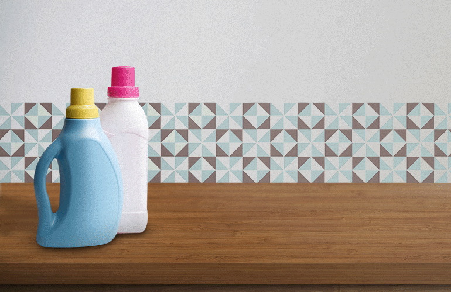

Qual tipo de sabão usar para lavar roupas?
Quem nunca colocou a roupa para lavar com aquela pequena dúvida se está fazendo tudo corretamente para poder ter a sua peça de roupa completamente limpa? Com tantos detalhes pra gente se preocupar, é completamente normal ter dúvidas se usa sabão em pó ou líquido.
Por isso resolvemos facilitar a sua vida e explicar qual tipo de sabão usar para cada lavagem.
Tipos de Sabão
Existem dois tipos de sabão, basicamente. O sabão em pó e o sabão líquido. Para lavar tecidos comuns, aqueles que não precisam de um tratamento especial ou aquelas peças de roupas com manchas ou muito sujas, os dois farão o mesmo serviço e vão deixar as suas roupas limpas.
A diferença de um para o outro é que o sabão líquido tende a ser um pouco mais concentrado. Isso quer dizer que você vai precisar usar menos do produto para ter o mesmo resultado.
Outro ponto é que o sabão em pó costuma ser um pouco mais difícil de se diluir. Em outras palavras, se você errar na quantidade, pode ser que no final da lavagem você encontre pequenos torrões de sabão que não se desmancharam.
Quando usar sabão em pó?
Uma boa dica para tirar manchas de peças de roupas específicas é deixar o sabão agir por um certo tempo, antes da lavagem.
Por exemplo, se quiser tirar manchas de uma calça jeans preta ou uma calça jeans encardida, basta diluir um pouco de sabão em pó na água e esfregar levemente em cima da mancha. Depois de alguns minutos com o sabão aplicado, é só colocar para lavar normalmente.
E vale lembrar que as lavadoras Consul possuem um copinho dosador para sabão! Com ele, você sabe exatamente a quantidade ideal de sabão para o volume de roupas dentro da sua lavadora. Assim você evita desperdícios na hora da lavagem e nem corre o risco de manchar suas roupas por usar sabão demais.
Ah, uma boa dica é virar a sua roupa do avesso na hora de lavar na máquina. Isso evita o desbotamento da peça.
Quando usar sabão líquido?
No fim das contas, os dois tipos de sabão vão te dar o mesmo resultado. A diferença é que você vai gastar menos produto se usar o sabão líquido. Como já comentamos, por ele ser mais concentrado e de fácil diluição, ele é perfeito para lavar desde aquela calça jeans na máquina, como as peças de roupas mais delicadas.
Agora que já sabe qual é o tipo de sabão ideal para as suas lavagens, nada mais justo do que também ter uma máquina de lavar que faça o serviço bem feito. Confira os modelos de lavadoras de roupas da Consul em nossa loja online.
Comparação: Sabão em pó ou líquido?
Com isso, sabemos que os dois são eficientes para diferentes usos. Mas, no geral o sabão líquido é mais concentrado e diluir com mais facilidade fazendo com que não fique resíduos na roupa.
Outro ponto a se considerar a fazer a comparação é que o sabão em pó tem mais aditivos e portanto se torna mais “agressivo” que o líquido, sendo mais eficaz na limpeza das roupas mais sujas.
O sabão em pó é mais eficaz na remoção de manchas ou de sujeiras maiores do que o líquido, mas por outro lado o sabão líquido é mais eficiente no quesito de manter as cores do tecido.
Além disso, para quem quer economizar saiba que o sabão líquido é melhor nesse aspecto, afinal como é mais diluído, não exige o uso de grande quantidade do produto.
| Sabão líquido | Sabão em pó | |
|---|---|---|
| Economia | mais econômico | menos econômico |
| Diluição | mais diluído | menos diluído |
| Recomendado | peças mais delicadas | remoção de manchas |
*O resultado final do processo poderá variar de acordo com os materiais e produtos utilizados, bem como o uso correto do eletrodoméstico.